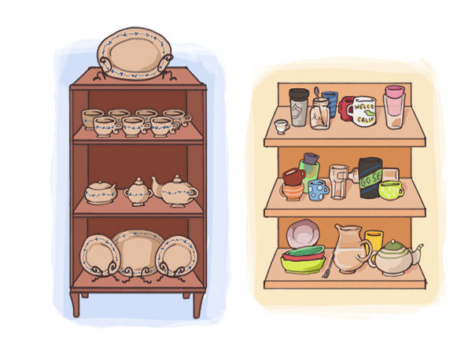

Pragmatistes contre puristes
Pour appréhender la substantifique moelle de l’informatique, il est nécessaire de revenir sur un débat qui anime les philosophes depuis Platon, sans doute d’ailleurs parce qu’il y a dans le logiciel une dimension d’indicibilité platonicienne : le rapport au monde sensible, qui oppose les puristes et les pragmatistes. L’analogie du service de table illustrera parfaitement notre propos.{kind=link}

Les puristes portent sur l’informatique un regard d’esthète. Pour eux, l’informatique est comme un service de porcelaine : on le sort pour les grandes occasions et le reste du temps, on peut l’admirer au travers des vitres du vaisselier. Que la moindre assiette soit ébréchée et c’est la valeur du service tout entier qui diminue. Il faut remplacer chaque article à la moindre égratignure et il est impensable de dépareiller quoi que ce soit au risque de passer pour un philistin. Les pragmatistes ont de l’informatique une approche opposée. Ils se contentent d’un service de table pratique et bon marché qu’ils utilisent en toute circonstance. Peu importe qu’un verre s’ébrèche ou que le décor des assiettes se ternisse, le service ne perdra pas de valeur pour autant et seules les pièces essentielles seront remplacées. Pour les pragmatistes, faire évoluer un service de table avec des pièces rapportées n’a rien d’un sacrilège et c’est même très pratique, surtout quand on organise une soirée à la fortune du pot entre voisins. Transposée à l’informatique, la différence entre ces deux visions se retrouve tout à fait dans la naissance des navigateurs web. Le 23 janvier 1993, c’est par un email très court que Marc Andreessen a annoncé la sortie de Mosaic, le premier navigateur web.07:21:17-0800 by marca@ncsa.uiuc.edu: By the power vested in me by nobody in particular, alpha/beta version 0.5 of NCSA’s Motif- based networked information systems and World Wide Web browser, X Mosaic, is hereby released: file://ftp.ncsa.uiuc.edu/Web/xmosaic/xmosaic-0.5.tar.Z Texte original de l’email de Marc Andreessen annonçant la sortie de Mosaic.Marc Andreessen était fasciné par les travaux que Tim Berners-Lee menait au CERN depuis 1991. En compagnie d’Eric Bina, il avait alors développé un premier prototype de ce qui allait devenir Mosaic. Au cours de l’année suivante, des collègues de plus en plus nombreux ont rejoint le projet, eux aussi passionnés par les possibilités offertes par le web. Toute cette petite équipe n’avait qu’une idée en tête : partager leur enthousiasme pour le web et le rendre accessible au plus grand nombre, en particulier aux non-spécialistes de l’informatique. Dans les années qui ont suivi, le navigateur web a quitté le laboratoire public qui l’avait vu naître et où il était alors confiné (le National Center for Supercomputing Applications de l’université de l’Illinois). En évoluant d’abord chez Netscape puis chez Microsoft, Mozilla et Google, le navigateur a fait évoluer le web dans des directions surprenantes (voire non souhaitables aux yeux de certains). Il n’en reste pas moins que cette évolution très rapide a déclenché la fameuse guerre des navigateurs, mais également des discussions passionnantes sur le futur d’Internet. Toutes ces batailles, qui datent de la fin des années 1990, ont fait naître l’Internet que nous connaissons aujourd’hui. Certains pionniers de l’informatique étaient contre le navigateur qui à leurs yeux transformait Internet en un fourre-tout désordonné. Au nombre de ces esthètes de l’informatique se trouvait Ted Nelson, qui travaillait depuis des années sur Xanadu, un système d’information fondé sur le concept de l’hypertexte1. Pour les pragmatistes, au contraire, le navigateur incarnait l’évolution de l’informatique dans sa plus pure tradition : en établissant la synthèse de points de vue différents et en incarnant ce que ce l’Internet Engineering Task Force appelle « un consensus approximatif et un code qui fonctionne ». Alors que la plupart des projets informatiques de grande ampleur sont nés de la vision conjointe des puristes et des pragmatistes, le navigateur, comme la plupart des logiciels qui constituent les pierres angulaires d’Internet, est avant tout le fruit du travail de quelques pragmatistes qui ont posé les fondations de l’Internet de la première heure : des pionniers parmi lesquels Jon Postel, David Clark, Bob Khan et Vint Cerf ont joué un rôle clé au cœur d’organisations telles que l’IETF. Les méthodes agiles de développement qui se sont imposées dans tous les projets informatiques modernes d’aujourd’hui ne sont rien d’autre que l’évolution du « bidouillage » de la poignée de pragmatistes de l’époque. Et cette petite histoire est allée bien au-delà des frontières d’Internet. Petit à petit, cette approche pragmatiste des problèmes s’est étendue à d’autres domaines techniques et a fini par également s’imposer dans le monde des affaires et le secteur public. Issues de l’informatique, les méthodes agiles se sont imposées dans bien d’autres domaines et sont en train de phagocyter toutes les autres méthodes de gestion de projet. Pour comprendre le monde qui arrive et même si vous n’êtes pas un spécialiste du domaine, il est capital de comprendre le concept d’agilité, dont les origines remontent au vieux débat qui divise l’informatique entre les pragmatistes et les puristes. La création du navigateur web ne fait pas exception à la règle. Jusqu’au début des années 1990, les bricolages des pragmatistes n’avaient pas le vent en poupe. Les méthodes classiques des puristes régnaient encore sur l’informatique. Cette approche classique s’explique par le manque de souplesse des premiers ordinateurs : il fallait transcrire les programmes sur des cartes perforées et chaque cycle de calcul était lent et coûteux. Les méthodes agiles n’étaient encore qu’un doux rêve : les programmeurs devaient souvent patienter plusieurs semaines pour disposer d’un créneau de temps-machine. Si un programme ne fonctionnait pas du premier coup, il pouvait arriver de ne jamais avoir une autre chance de le faire tourner. Dans de telles conditions, les méthodes de puristes étaient idéales : pour minimiser les risques et augmenter les chances de succès, on vérifiait d’abord sur le papier que tout pouvait fonctionner. C’est ce qui explique que les premiers grands informaticiens aient été des champions de l’abstraction souvent issus des mathématiques (et presque toujours des hommes, quelques rares femmes telles que Klari Von Neumann ou Grace Hopper faisant exception). Ils étaient capables de concevoir le fonctionnement d’un programme en amont dans sa globalité. La phase de codage sur des cartes perforées était déléguée à des armées d’opératrices (car il s’agissait généralement de femmes2) beaucoup moins autonomes et qui n’avaient plus qu’à peaufiner les détails. En résumé, au moment où l’approche pragmatiste des hackers était de fait impossible, les méthodes de conception des puristes ont ouvert la voie. La pratique des essais-erreurs aurait été trop risquée et trop lente. On a donc tout simplement privilégié la méthode la plus productive. C’est l’arrivée sur le marché d’ordinateurs plus petits et dotés de claviers plus faciles à utiliser que les cartes perforées qui a rendu le hacking possible. Cette nouvelle approche permise par une plus grande disponibilité des machines favorise les essais dans la conception des programmes. Elle s’est développée tout au long des années 1960 à partir de quelques universités comme le MIT. Bien que cette approche n’ait été largement reconnue qu’au tournant des années 2000, elle avait déjà permis la transformation des méthodes de conception de logiciels qui n’étaient plus centrées sur la conception algorithmique mais directement sur l’écriture du code lui-même. Les premières applications de cette nouvelle approche sont apparues dès le début des années 1970 et comptent des logiciels aussi importants et bien conçus que le système d’exploitation Unix qui s’est développé à la frontière de l’informatique industrielle, grâce à l’arrivée des mini-ordinateurs. La bataille entre les tenants de l’approche puriste et les partisans de l’esprit hacker a duré tout au long des années 1970. Au cours des années 1980, cependant, l’apparition des ordinateurs personnels – qu’on pouvait connecter en réseau – a fait du hacking la méthode prédominante en programmation. L’esprit des premiers creusets du hacking (tels que le MIT ou les Bell Labs) s’est diffusé rapidement dans le monde de la programmation. L’informaticien-type a changé de nature : on est passé de la figure d’un simple rouage interchangeable dans une équipe pléthorique à celle d’un bidouilleur de génie, seul derrière un ordinateur mais passant son temps à communiquer avec d’autres au travers des réseaux. Dorénavant, les meilleurs informaticiens ne seraient plus sous les ordres d’un grand architecte mais des créatifs déployant toute leur énergie au service de marottes personnelles. La fondation de l’IETF, en 1986, a fait pencher définitivement la balance du côté des pragmatistes. En janvier de cette année-là, un groupe de vingt-et-un chercheurs rassemblés à San Diego donnait naissance à ce qui allait devenir le « gouvernement » d’Internet. En dépit d’un nom dans la plus pure tradition bureaucratique, l’IETF ne ressemble à aucune autre institution, à commencer par le fait qu’elle est ouverte à tous ceux qui veulent bien y participer, sans autre forme de sélection. Son fonctionnement est défini dans un document touffu et abscons, Le Tao de l’IETF, qui est largement méconnu en dehors du monde des réseaux. Ce texte combine le ton informel et franc d’un bon blog, la solennité d’une constitution et la sagesse imagée des principes du Zen. Cet extrait connu vous en distillera l’esprit :
À bien des égards, l’IETF repose sur les croyances de ses participants. L’une des « croyances fondatrices » est incarnée dans une citation sur l’IETF de David Clark : « Nous rejetons les rois, les présidents et le vote. Nous croyons en un consensus approximatif et un code qui fonctionne ». Une autre citation qui est devenue une croyance communément répandue à l’IETF vient de Jon Postel : « Soyez conservateur dans ce que vous envoyez et libéral dans ce que vous acceptez3 ».Au moment de sa fondation, l’IETF était composée avant tout d’informaticiens universitaires mais sa création fut le moment où les sociétés privées et l’open source ont pris le relais des laboratoires publics. Pour les trente années suivantes, l’IETF allait devenir le chef de file4 d’une conception de l’Internet pluraliste, égalitariste et fédérative. Sans en avoir l’air, l’IETF a donné à notre principe « le logiciel dévore le monde » la plus grande partie de ses dimensions économiques et politiques. La différence entre les puristes et les pragmatistes apparaît clairement quand on compare la façon dont l’informatique a évolué au Japon et aux Etats-Unis depuis le début des années 1980. En 1982 environ, en se lançant dans un ambitieux programme d’« informatique de cinquième génération », le Japon a clairement choisi l’approche des puristes. Ce programme gouvernemental et hautement corporatiste, qui donna quelques sueurs froides aux Etats-Unis à l’époque, n’a globalement abouti à rien. Par tradition, aux Etats-Unis, les programmes sont lancés sur des financements publics mais finissent toujours par s’étendre au privé et c’est d’ailleurs ce qui a permis la naissance d’Internet tel que nous le connaissons. Les quelques contributions actuelles du Japon au monde du logiciel, telles que le très fameux langage Ruby qui a été inventé par Yukihiro Matsumoto, relèvent au contraire de l’approche pragmatiste des hackers. Je vais maintenant démontrer que ce modèle de développement ne se limite pas à l’informatique. Dans tous les domaines envahis par le logiciel, les nouveaux projets ne sont plus issus de planifications rationnelles mais d’actions concrètes de terrain, ce qui change radicalement les rapports sociaux dans tous les secteurs. Ce changement est déjà effectif depuis les années 1990 pour les secteurs traditionnellement techniques, à l’instar de la mécanique5, du génie civil et des technologies de l’information. Les secteurs non techniques, le marketing en particulier, commencent à s’y mettre. L’importance de la domination des méthodes pragmatistes sur celles des puristes ne doit pas être sous-estimée : dans le monde des technologies, cela fut l’équivalent de la chute du mur de Berlin.
[1] Ted Nelson est le créateur du concept d’hypertexte (ndt). [2] Cette distinction entre des concepteurs largement autonomes et des opératrices réduites au rang de simples exécutrices était caractéristique du rôle laissé aux femmes dans les premiers temps de l’informatique. C’est d’ailleurs pourquoi l’impor- tance du travail d’informaticiennes telles que Klari Von Neuman ou Grace Hopper passe souvent inaperçu : tout le monde les assimile aux légions d’opératrices alors employées dans l’informatique. Le cas de Grace Hopper est intéressant : la culture populaire en a fait une vraie légende de la programmation dont le rôle de premier plan a occulté les contributions majeures d’autres informaticiennes. En surévaluant le rôle de quelques femmes dans la naissance de l’informatique, on sous-évalue paradoxalement la misogynie qui régnait réellement dans les années 1940 et 1950. Bien que rien ne me permette le démontrer, je pressens que le soi-disant déclin du rôle des femmes dans l’informatique, pourtant courant dans la culture populaire, n’est qu’un leurre. Mesurer le rôle des femmes à l’aune de l’informatique interactive qui date des années 1960 à l’époque où nais- sait la culture de hacker avec l’arrivée des premiers mini-ordinateurs comme le PDP-1 au MIT constituerait certainement un indicateur plus pertinent. On s’apercevrait certainement alors que le rôle des femmes dans l’informatique n’a cessé de croître. Il y est d’ailleurs probablement plus important que dans d’autres domaines de la conception industrielle. [3] Traduction officielle du Tao de l’IETF. Les notions de conservateur et libéral sont à prendre dans leur acception américaine (ndt). [4] Cet essor à la fois institutionnel et philosophique ne s’est pas fait sans que l’IETF s’attire des critiques. Le reproche le plus habituel émane bien entendu des puristes : les méthodes prônées par l’IETF favorisent les évolutions incrémen- tales et la réflexion à court terme. Nous analyserons ce type de critique dans cet ouvrage qui ne concerne cependant pas l’approche pragmatiste en soi mais relève, plus largement, d’une différence dans la façon d’aborder les problèmes. On retrouve d’ailleurs ce type de reproche dans le camp des pragmatistes, par exemple en ce qui concerne la pertinence du principe énoncé par Postel cité plus haut qui, parce qu’il laisse la possibilité d’ « erreurs indolores » peut rendre confuses certaines tentatives de standardisation. En réponse à ce phénomène, l’IETF a édicté un autre principe de conception : trompez-vous vite et beaucoup. [5] Pris ici au sens académique de sciences pour l’ingénieur (ndt).